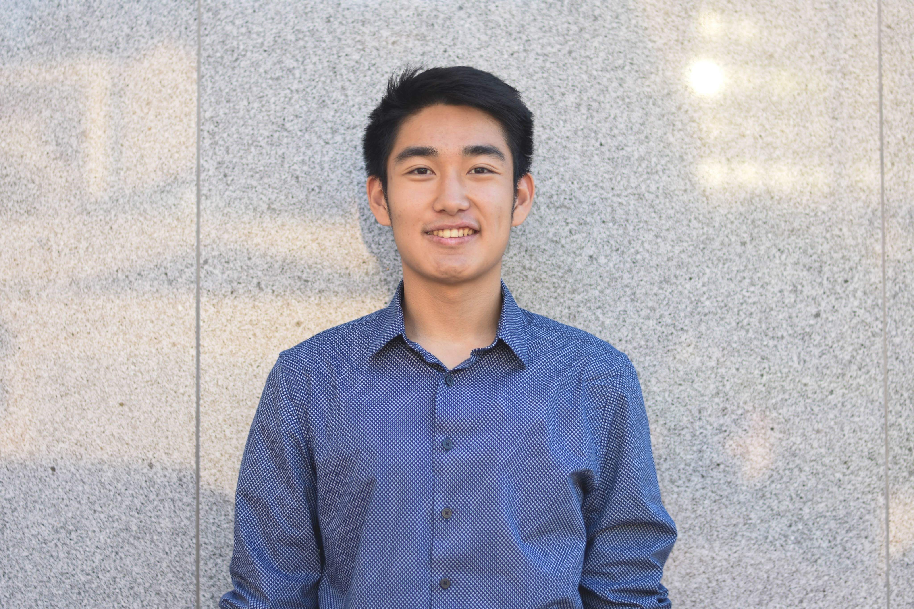

<div class="row flex-column-reverse flex-md-row py-2">
    <div class="col-md-8" id="bio">
        <h1>Leonardo Tang</h1>
        <p class="text-justify">
            Welcome! I'm a Research Specialist at Emory University Department of Radiology and Imaging Science under Dr. Hui Mao
            specializing in deep learning architectures for medical imaging data. My work focuses on adapting state-of-the-art 
            computer vision techniques to solve complex real world problems in medical imaging. 
            Ongoing research includes leveraging feature modulation and 
            custom loss functions with frequency priors to enhance diffusion probabilistic models for MR spectroscopy denoising, 
            as well as designing robust pipelines for multi-modal prostate cancer analysis. I am seeking a PhD to research 
            balancing emergence abilities with domain-specific priors; specifically, I aim to explore how explicit inductive 
            biases can be introduced to guide models toward physically adherent latent representations.
        </p>

        <p style="text-align:center">
            <a target="_blank" href="mailto:{leonardo.tang@emory.edu}">Email</a> &nbsp;/&nbsp;
            <a href="https://scholar.google.com/citations?user=L4bN5vYAAAAJ">Google Scholar</a> &nbsp;/&nbsp;
            <a href="assets/cv.pdf">CV </a>
        </p>
    </div>
    <div class="col-md-4" style="z-index:4;">
        
    </div>
</div>

{% include publications.html %}
<!-- {% include presentations.html %} -->